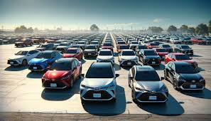

Carros Híbridos Usados: O Caminho Sustentável para o Orçamento Consciente
8 de setembro de 2024
À medida que a conscientização sobre a importância da sustentabilidade cresce, os carros híbridos usados estão se tornando uma opção cada vez mais atraente para os consumidores preocupados com o orçamento e o meio ambiente. Nesta matéria, exploraremos por que os carros híbridos usados são uma escolha sustentável e econômica:
-
Economia de Combustível:
- Os carros híbridos usados são conhecidos por sua eficiência energética, combinando motores a combustão interna com motores elétricos para reduzir o consumo de combustível. Isso pode resultar em economias significativas de combustível em comparação com veículos convencionais, ajudando os proprietários a economizar dinheiro a longo prazo.
-
Baixas Emissões de Carbono:
- Os carros híbridos usados geralmente produzem menos emissões de carbono em comparação com veículos movidos apenas a gasolina ou diesel. Isso significa que eles têm um impacto ambiental menor e podem ajudar a reduzir a pegada de carbono do proprietário.
-
Manutenção Mais Barata:
- Em geral, os carros híbridos usados tendem a ter custos de manutenção mais baixos do que os veículos convencionais. Isso ocorre em parte devido à natureza simplificada de seus sistemas de transmissão e freios regenerativos, que experimentam menos desgaste.
-
Incentivos Fiscais e Subsídios:
- Muitos governos oferecem incentivos fiscais e subsídios para a compra de carros híbridos usados como parte de seus esforços para promover veículos de baixa emissão. Isso pode incluir descontos no imposto de circulação, isenções fiscais e subsídios diretos para a compra.
-
Valor de Revenda:
- Devido à sua popularidade crescente e aos benefícios econômicos e ambientais que oferecem, os carros híbridos usados tendem a reter seu valor melhor do que os veículos convencionais. Isso significa que os proprietários podem esperar um retorno melhor do investimento quando decidirem vender ou trocar seus veículos.
-
Consciência Ambiental:
- Escolher um carro híbrido usado demonstra um compromisso com a sustentabilidade e a proteção do meio ambiente. Os consumidores conscientes estão cada vez mais optando por veículos que ajudam a reduzir a poluição e minimizar o impacto ambiental.
Os carros híbridos usados oferecem uma maneira sustentável e econômica de se locomover, combinando eficiência energética, baixas emissões de carbono, custos de manutenção mais baixos e incentivos fiscais. Para os consumidores preocupados com o orçamento e o meio ambiente, eles representam uma escolha inteligente que pode ajudar a economizar dinheiro e reduzir o impacto ambiental ao mesmo tempo.
Voltar